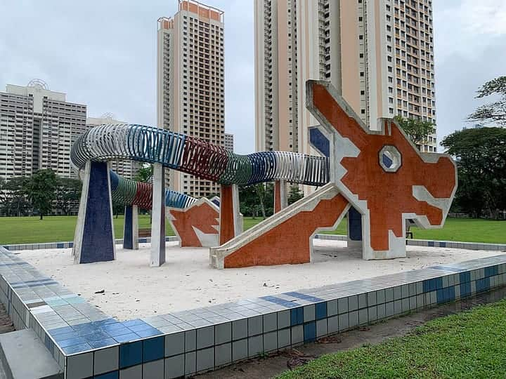
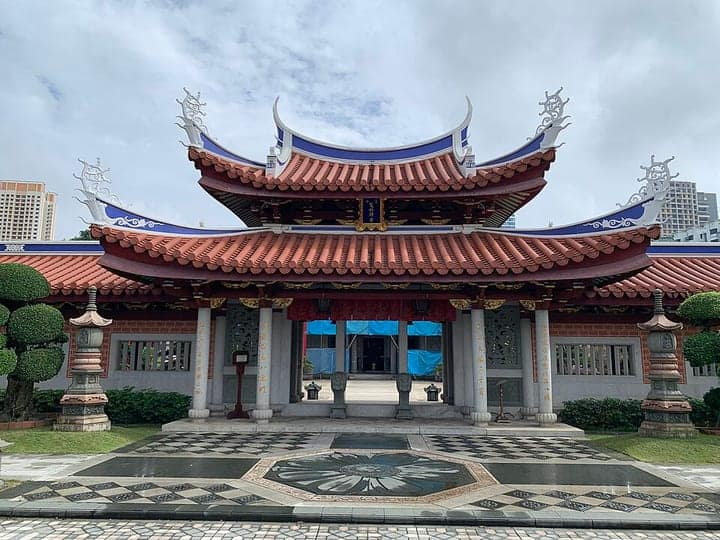

Singapore
Toa Payoh
a town of Singapore — sights & hawker food, sourced
55 places · 1 area · every one sourced, pinned and status-checked · last checked · 2 closed, kept for the record. Ordered by tier, then by number of named sources. How we choose
chicken rice · Hokkien mee · Toa Payoh Dragon Playground
Start with Hai Nan Xing Zhou Beef Noodle

Start with

Toa Payoh 55 places · area 1 of 1
-
1 Must see within Toa Payoh · Wok noodles
Hai Nan Xing Zhou Beef Noodle
Nearly 70 years of Hainanese beef noodles from S$5, newly awarded a Michelin Bib Gourmand — dry or soup, in a rich braise the whole hawker centre queues for.
Kim Keat Palm Market & Food Centre, #01-06, Blk 22 Lorong 7 Toa Payoh, S310022
Recommended by , , +2, ,
-
2 Must see within Toa Payoh · Chinese
Chey Sua Carrot Cake
Michelin Bib Gourmand since 2016 — two sisters fry each plate of crispy-yet-spongy white carrot cake to order, drawing long queues at the freshly renovated (reopened Aug 2025) Toa Payoh West hawker centre.
Toa Payoh West Market & Food Centre, #02-30, Blk 127 Lorong 1 Toa Payoh, S310127
Recommended by , , +1,
-
3 Must see within Toa Payoh · Wok noodles
Chef Kang's Noodle House
A Michelin-starred Cantonese chef sells $5 wanton mee from a warehouse-canteen stall — HK-shipped springy noodles and charred char siew that earned a Michelin Bib Gourmand within a year of opening (still listed 2025/2026).
Block A, Jackson Square, 11 Toa Payoh Lorong 3, S319579
Recommended by , , +1,

Photo: Chainwit. · CC BY 4.0 · Wikimedia Commons (resized) 4 Must see within Toa Payoh
Toa Payoh Dragon Playground
Singapore's most iconic surviving 1979 mosaic 'dragon' playground, designed by HDB's Khor Ean Ghee — a terrazzo-tiled dragon head with a climbable ring body. One of only two dragon playgrounds left and a marquee stop on NHB's Toa Payoh Heritage Trail.
Look for Open 24h, free
Lorong 6 Toa Payoh (in front of Blk 28), Singapore
Recommended by , ,
-
5 Must see within Toa Payoh · Wok noodles
Come Daily Fried Hokkien Prawn Mee
Michelin-listed and running since 1968, Steven Ng reduces prawn stock right in the wok for one of Toa Payoh's most famous plates of Hokkien mee — a fixture of the reopened Toa Payoh West food centre.
Toa Payoh West Market & Food Centre, #02-27, Blk 127 Lorong 1 Toa Payoh, S310127
Recommended by , ,

Photo: Chainwit. · CC BY 4.0 · Wikimedia Commons (resized) 6 Must see within Toa Payoh
Lian Shan Shuang Lin Monastery
Singapore's oldest Buddhist monastery — completed 1909 and gazetted a National Monument in 1980 — modelled on Fuzhou's Xi Chan Monastery, with the Hall of Celestial Kings and Mahavira Hall laid out in the classic cong lin ('layered forest') plan.
Look for Free entry
184 Jalan Toa Payoh, Singapore 319944
Recommended by ,
-
7 Must see within Toa Payoh
United Temple (United Five Temples of Toa Payoh)
Established 1974, the first temple in Singapore to house smaller constituent temples under one roof — five village temples (Chee Tian Keng, Shan Zu Yuan Fu De Ci, Tong Xing Gang, Zhao Ying Ci and others) that were displaced when Toa Payoh's kampongs were cleared pooled their devotees' funds to build here. A landmark on NHB's Toa Payoh Heritage Trail 'Of Faiths & Beliefs' route.
Look for Free entry
Lorong 6 Toa Payoh (near Blk 177/178), Singapore
Recommended by ,
-
8 Must see within Toa Payoh · Wok noodles
LiXin Teochew Fishball Noodles
The original stall of Singapore's 58-year-old fishball dynasty (est. 1968), Michelin Bib Gourmand for four years running since 2022 — springy, umami yellowtail fishballs made fresh daily.
Kim Keat Palm Market & Food Centre, #01-20, Blk 22 Lorong 7 Toa Payoh, S310022
Recommended by ,
-
9 Worth the detour within Toa Payoh · Malay
Kedai Makan Muhajirin
A beloved $1 nasi lemak that has held its price since 1987 to stay affordable for elderly regulars — cooking starts at 4am and 300-500 plates sell out by midday; covered by every major food outlet and YouTuber Ghib Ojisan.
Blk 20 Toa Payoh Lorong 7 coffeeshop, S310020
Recommended by , , +3, , ,
-
10 Worth the detour within Toa Payoh · Chinese
Old Long House Popiah
A 3rd-generation popiah stall with roots to 1930, hand-rolling Hokkien-style popiah (no pork, no lard, no MSG) with house-fried sole-fish crisps — one of Singapore's most heritage popiah names.
Kim Keat Palm Market & Food Centre, #01-03, Blk 22 Lorong 7 Toa Payoh, S310022
Recommended by , , +1,
-
11 Worth the detour within Toa Payoh · Chendol
The Twisted Trio
A hole-in-the-wall HDB cake cafe by three pastry-chef friends selling atas bakes from $3.50 — the chio Watermelon Rose cake (a nod to Black Star Pastry) and fudgy brownies among biscotti, pound cakes and cookies.
Blk 85C Lorong 4 Toa Payoh, #01-385, S310085
Recommended by , , +1,
-
12 Worth the detour within Toa Payoh
Toa Payoh Town Park & Look-Out Tower
The 4.8-hectare 1970s town park that pioneered greenery in HDB new towns — landscaped ponds, rustic gazebos and the conserved 25 m space-age Look-Out Tower, a favourite 1970s-80s wedding-photo backdrop.
Look for Open daily, free; tower not accessible
Lorong 6 Toa Payoh (beside Toa Payoh HDB Hub), Singapore
Recommended by , ,
-
13 Worth the detour within Toa Payoh
Toa Payoh Sensory Park
Singapore's first sensory park (opened 2009), a 1.1-hectare garden by Surbana and Yoshisuke Miyake split into five zones for sight, smell, touch, sound and taste — with larger-than-life optical-illusion mirrors that reveal a hidden face, resonating steel 'drum' plates, a playground and a fragrant garden.
Look for Open daily, free
Lorong 5 / Lorong 6 Toa Payoh, Singapore
Recommended by , ,
-
14 Worth the detour within Toa Payoh · Wok noodles
Ru Ji Kitchen (Toa Payoh)
The Toa Payoh outlet of Uncle David Ng's famed noodle stall, where bouncy yellowtail fishballs are hand-pounded on the spot (the Holland Drive original holds the Michelin Bib Gourmand).
Blk 22 Lorong 7 Toa Payoh, #01-58, S310022
Recommended by , ,
-
15 Worth the detour within Toa Payoh · Chinese
Teochew Handmade Pau
A 30-plus-year heritage pau stall (est. 1993, three years on the Michelin Plate) hand-making Teochew-style buns with thick, not-too-sweet lotus paste — announced closure end-2025 but reopened June 2026 after public demand.
Toa Payoh West Market & Food Centre, Blk 127 Lorong 1 Toa Payoh, S310127
Recommended by , ,
-
16 Worth the detour within Toa Payoh · Hawker
Grandpa Homemade Cheung Fun
A father-and-son team from Shenzhen mill their own rice flour on a stone grinder to make thicker, rustic cheung fun to order, tinted naturally with spinach and pink dragonfruit across 13 fillings — a standout of the reopened (Aug 2025) Toa Payoh West hawker centre.
Toa Payoh West Market & Food Centre, #02-22, Blk 127 Lorong 1 Toa Payoh, S310127
Recommended by , ,
-
17 Worth the detour within Toa Payoh · Chendol
Four Seasons Cendol
Widely dubbed the best cendol in Singapore — and a favourite of ESM Goh Chok Tong, whose photos line the stall — with firmly-packed ice that stays solid, springy pandan jelly and gula melaka, plus Mao Shan Wang / D24 durian tops.
Toa Payoh Lorong 8 Market & Food Centre, #01-07, Blk 210 Lorong 8 Toa Payoh, S310210
Recommended by , ,
-
18 Worth the detour within Toa Payoh · Chinese
Ah Chuan Fried Oyster Omelette
A 50-year-old orh chien specialist (open ~3 hours a day) frying crisp-yet-chewy potato-starch batter with fluffy egg and juicy large Korean oysters, finished with crunchy parsley — a repeat pick on 'best oyster omelette' lists.
Kim Keat Palm Market & Food Centre, #01-25, Blk 22 Lorong 7 Toa Payoh, S310022
Recommended by , ,
-
19 Worth the detour within Toa Payoh · Wok noodles
Cai Ji Fishball Noodle
A 58-year cult favourite with arguably the longest queue in Palm Spring from 6am — springy mee pok tossed in a punchy chilli sauce with hand-made fishballs and meatballs; dry or soup.
Toa Payoh Palm Spring Market, Blk 93 Lorong 4 Toa Payoh, S310093
Recommended by , ,
-
20 Worth the detour within Toa Payoh · Hawker
Soon Heng Rojak
A decades-old rojak stall by the HDB Hub food-court escalator with a permanent 20-30 minute queue — a generous mountain of youtiao, cucumber, pineapple, turnip and cuttlefish drowned in prawn-paste, torch-ginger and mounds of peanut.
Gourmet Paradise Food Court, Toa Payoh HDB Hub, #B1-01, Blk 480 Lorong 6 Toa Payoh, S310480
Recommended by , ,
-
21 Worth the detour within Toa Payoh · Chinese
Biang Biang Noodles Xi'an Famous Food
A rare hawker source of Xi'an biang biang noodles — extra-wide belt noodles hand-stretched and slapped against the counter, tossed with braised pork, tomato-egg and chilli, plus rou jia mo (Chinese 'burger'); a hidden gem at Toa Payoh Central's Food Alley.
Food Alley, 190 Lorong 6 Toa Payoh, #01-518, Toa Payoh Central, S310190
Recommended by , ,
-
22 Worth the detour within Toa Payoh
Church of the Risen Christ
Toa Payoh's first Catholic church (inaugurated 1971), a modernist landmark at the junction of Toa Payoh Central and Lorong 4 that has long offered Mass in English, Mandarin and Tamil — featured on the Toa Payoh Heritage Trail's 'Of Faiths & Beliefs' route.
91 Toa Payoh Central, Singapore 319193
Recommended by ,
-
23 Worth the detour within Toa Payoh
Block 53, The 'VIP Block'
The Y-shaped 1967 HDB showpiece with a rooftop viewing gallery once used to survey the young new town from above. Queen Elizabeth II visited in 1972 (as did Princess Anne, Prince Philip and other dignitaries), earning it the 'VIP Block' name.
Look for Rooftop gallery closed; view from ground level
53 Lorong 5 Toa Payoh, Singapore 310053
Recommended by ,
-
24 Worth the detour within Toa Payoh
Toa Payoh Heritage Trail
NHB's self-guided trail through Singapore's second satellite town, linking 16-plus sites — from the Dragon Playground and Town Park to Shuang Lin Monastery — across two themed routes, 'Of Public Housing & Shared Spaces' and 'Of Faiths & Beliefs'.
Look for Free; map downloadable on Roots.gov.sg
Toa Payoh Central (trail starts near HDB Hub), Singapore
Recommended by ,
How we choose
Every place is recommended by named sources (review-aggregator star ratings never count as the recommender), pinned to its door from a published coordinate, and status-checked. Closed places stay, flagged, so you know they’re gone.
- Must see
- The places to plan a visit around — graded within each area, not across the city.
- Worth the detour
- Strong picks, worth going out of your way for.
- Deep cut
- For the curious: smaller, odder, more local.
Within each area, places are ordered by tier, then by number of named sources — never by popularity. No ratings, prices or opening hours are shown, because the guide doesn’t hold verified ones.
14 sights and 41 places to eat in Toa Payoh, a town of Singapore, each traceable to the source that named it (Michelin, local news & vetted local/viral creators). Renders in soft pastel, light or dark.
Take Toa Payoh with you
Every place, its sources, the Guidebook and the photos at a small size. Map tiles are not saved: offline, the map shows our own pin schematic and every place stays listed.